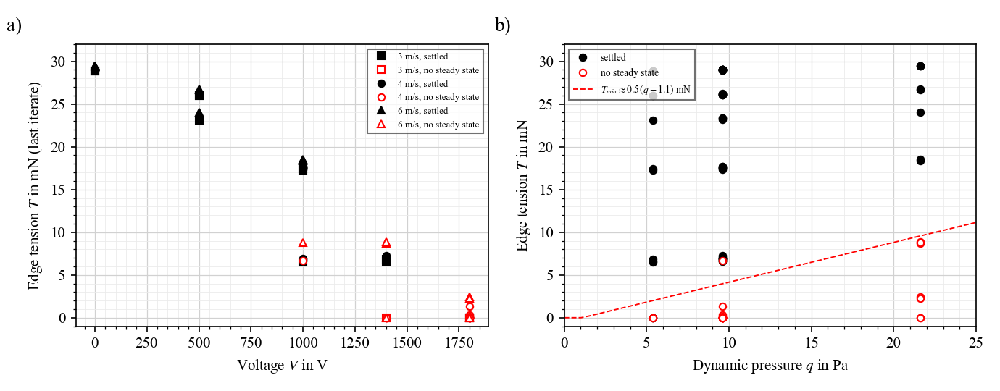
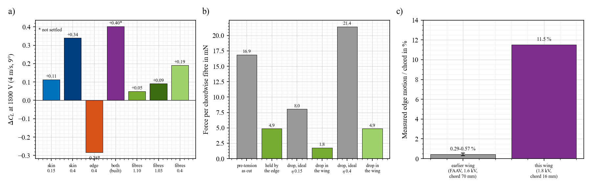
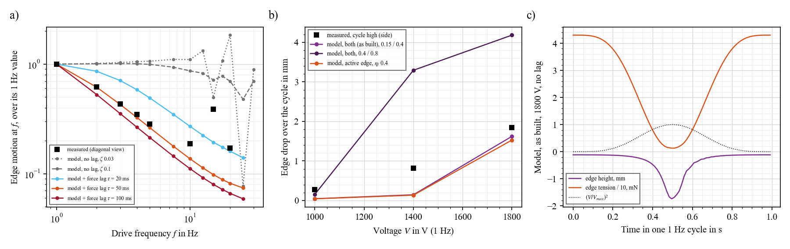
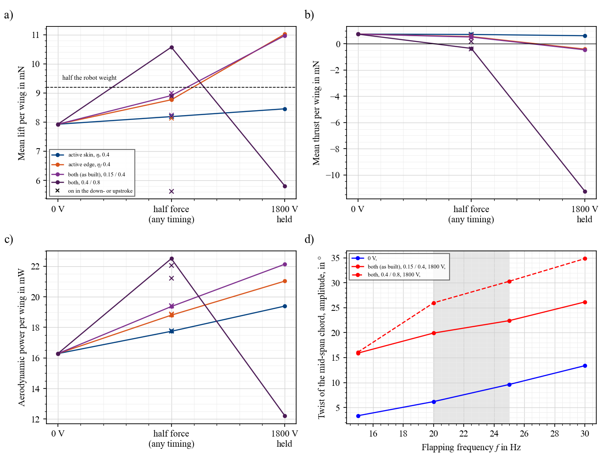

Active membrane wings / Wing in air
Wing in air
The whole skin is active, not only the edge. What does the skin do on its own, what does the edge do, and how do both compare with a passive membrane and with discrete rolled fibres on the same wing? On the bench and in flow, with the bench data as the check.
Models of the wing in air: finite elements with a vortex lattice (steady), and a time model with an unsteady lattice. The tests they are checked against are on Experiments; main figures on Results.
In short
- Yes, the active skin changes tension, but most of its pull does not stay as a tension change. The skin and the edge share the chord: when the skin relaxes, the soft edge moves aft and takes up most of it. At 1800 V, only about 15 % of the skin's Maxwell stress becomes a drop in chord tension (0.06–0.17 N/m out of 0.51), about a third in span.
- On the bench this is invisible; in air it is not. The skin's tension sets its bulge under load, and the bench load is the wing's own weight, 0.65 Pa. In flight the load is 8–15 Pa. With a passive edge, the active skin alone adds $\Delta C_L$ +0.09 to +0.14 ($\eta_s$ 0.15) or +0.26 to +0.37 ($\eta_s$ 0.4) at 3–6 m/s and 3–12°, by more camber. It always settles.
- The edge does something else. It changes twist, not camber. Up to 1400 V it moves lift by −0.04 to +0.15. Once it goes slack in flow (at 4 m/s or faster, below about 7–9 mN), the wing has no steady state. Keep the edge above about 10 mN in flight.
- Discrete fibres on the same wing do less. Four chordwise rolled fibres (51 mg) keep only 29 % of their pre-tension, because the edge bows towards them. At voltage they lose 22 % of their ideal force, and give $\Delta C_L$ +0.05 against +0.11 for the active skin at the same efficiency. They also flatten the wing: −0.2 in $C_L$ at 0 V. This matches the earlier wings, whose fibres bowed and moved the wing 0.3–0.6 % of the chord, against 11.5 % here.
- The force lags the voltage by about 50 ms. That alone fits the measured fall of the edge motion from 1 to 5 Hz. At 25 Hz the DEA cannot switch within a stroke: on in the downstroke, on in the upstroke and a sine all act like half voltage held. The voltage is a slow trim, not a per-stroke control.
- Flapping at 25 Hz, 4 m/s, per wing: half force on the edge gives +11 % lift, −27 % thrust and +17 % power, and twist goes from 10° to 15°. Full force gives +38 % lift, slightly negative thrust and +33 % power. Full slack loses lift. The skin alone gives +3 to +7 % lift in this model, and +10 to +30 % in the finite elements.
Does the active skin change tension?
![Four panels from the finite elements of the built wing on the bench. a, skin tension across the chord against voltage for six designs, with dashed lines for the drop if all the Maxwell stress became tension. b, change of the in-plane bow of the edge against voltage: the skin and the fibres straighten it, the active roll bows it. c, edge height change at 1800 V against pressure on the wing: the active edge flips from down to up, the skin and the fibres move it little. d, thin-aerofoil lift change from the mid-span chord at 0 and 15 Pa.](A_skin.png)
- Equation, the pull: each active layer of skin pushes outward with the Maxwell stress $P = \eta_s\, n\, \varepsilon (V/H)^2 H$, with $n$ active layers, $H$ the layer thickness and $\eta_s$ the share that acts. At 1800 V and $H$ 30 µm, $P$ = 0.40 N/m ($\eta_s$ 0.15) or 1.07 N/m (0.4). The skin's chord tension at 0 V is 0.51 N/m, so if all of $P$ stayed as tension the skin would go slack (dashed lines in a).
- Equation, where it goes: the skin is held across the chord by the edge, which is bowed towards the LE: $N_c = 8 T s / L^2$ (tension $T$, bow $s$, length $L$). The skin and the edge are two springs in series. The share that stays as tension is $r = k_e / (k_e + k_s)$, with $k_e = 8T/L^2$ for the edge and $k_s$ for the skin's chord stiffness. The edge is soft (67 N/m² at 29 mN), so $r$ is small. Finite elements: $r$ = 0.15 across the chord, 0.33 along the span, for both skins. The rest becomes edge motion aft (b): 0.12 mm ($\eta_s$ 0.15) and 0.39 mm (0.4).
- Trend (a, b): skin alone, chord tension 0.51 → 0.45 or 0.34 N/m, span tension 0.83 → 0.70 or 0.46. The active roll does the opposite in plane: it loses tension and bows by 1.1 mm. As built (both), the two partly cancel in plane.
- Equation, the bulge: under a pressure $p$, the skin between the LE and the edge bulges by $h = p\,c^2/(8N_c)$, so $\Delta h/h = -\Delta N_c/N_c$. A 12–33 % drop in $N_c$ gives 14–50 % more camber, but only where there is a load.
- Trend (c, d), load: the out-of-plane edge height barely changes with the skin, with or without load (under 0.15 mm). What changes is the shape between the LE and the edge: at 15 Pa, the skin alone gives thin-aerofoil $\Delta C_L$ +0.13 ($\eta_s$ 0.15) and +0.39 (0.4). At 0.65 Pa (the bench), almost nothing. The active edge goes the other way at 15 Pa (−0.6): it rises and washes the wing out.
- So: the bench measures the edge, the air will also measure the skin. "It is the edge, not the skin" (robot page) holds on the bench only.
- Validate: with the roll unpowered, put a known load on the skin and image the chord at 0 and 1800 V. A suction box at 10 Pa, or a fan, from the side. Prediction: the mid-chord bulge grows by 14–50 %, and the edge stays within 0.15 mm.
Lift in flow
![Four panels, finite elements coupled to a steady vortex lattice, built wing. a, lift coefficient against angle of attack at 0 V and at 1800 V for the active skin, the fibres and the active edge at 1400 V. b, lift change at 4 metres per second and 9 degrees against voltage for all designs, open points not settled. c, classic membrane curve of lift against tension coefficient, with the wing's points moving left as voltage lowers the skin tension. d, mid-span chord shape at 0 and 1800 V for the active skin, the active edge and the fibres.](A_lift.png)
- Equation: the sheet is solved with the pressure from a vortex lattice on its current shape, until both agree (steady, attached flow, 3D, the real outline). Lift coefficient $C_L = L/(q S)$, $q = \rho U^2/2$, $S$ = 9.6 cm² in the lattice.
- Trend (a): at 0 V every design is the same wing: $C_L$ 0.51, 0.84, 1.13, 1.41 at 3, 6, 9, 12° (4 m/s). This is the passive membrane, the reference. Active skin at 1800 V: +0.11 to +0.13 ($\eta_s$ 0.15), +0.33 to +0.37 (0.4), at every angle: a shift, like more camber. Above about 1.1 the real wing likely stalls at this Reynolds number (about 4,000).
- Trend (b): the skin's change is smooth and grows like $V^2$. The edge's is small and changes sign: −0.04 at 1400 V and 4 m/s, +0.15 at 3 m/s. Beyond, a slack edge has no steady state (open points, next).
- Equation, why the skin works (c): a membrane is set by its tension coefficient $C_T = N_c/(q c)$. As $C_T$ falls towards about 1.7 (2D, inextensible), camber and lift grow without bound: static divergence. This wing sits at $C_T$ ≈ 3.3 at 4 m/s, 0 V, on the steep part. The active skin moves it left, to about 2.2. At 6 m/s it is already at 1.5, held only by the skin's stretch and the finite span. The skin is a lever because the wing already sits near divergence.
- Trend (d): mid-span chord, 4 m/s, 9°. Active skin: camber grows from about 9 % to 16 % of the chord, the edge moves little. Active edge: the rear of the chord lifts. Fibres: as the skin, but much less.
- Validate: static wind tunnel, 4 m/s, 6° and 9°. First the skin alone (roll unpowered), then the edge alone, randomised order, with a sham. Prediction: skin alone +0.1 to +0.35 in $C_L$ (+1 to +3 mN per wing), camber visible from the side.
A slack edge in flow

- What happens: with the edge slack, the skin alone holds the rear of the chord. In flow, lift pulls the rear up, that changes the lift, and the coupled solution never settles. A steady model cannot say if that is divergence or flutter; either way the wing has no steady shape.
- Trend: at 3 m/s ($q$ 5.4 Pa) even a slack edge settles. At 4 m/s it needs about 7 mN, at 6 m/s about 9 mN (roughly $T_{min} \approx 0.5\,(q - 1)$ mN with $q$ in Pa). At 1800 V the as-built edge goes to 0.
- So: for flight, start the edge at 55–70 mN and let voltage take off at most 40–50 mN, or stay at 1400 V. A fully slack edge is a bench effect, not a flight mode.
- Validate: the static wind-tunnel test above, filmed at 200+ fps. Prediction: a visible flutter of the edge at 1800 V and 4 m/s if it goes slack; none at 1400 V.
Compared with discrete rolled fibres

- The comparison wing: same outline, same carbon LE, same unpowered roll as the edge, passive skin, plus four chordwise rolled DEA fibres as in the earlier wings, scaled to this span: 12 mm sheet rolled, 10 mm electrode, 2 active films, 12.5 mm apart, pre-stretch 1.10 (as before) or 1.03. They add 51 mg per wing, and 8 contacts.
- Equation: each fibre pulls on the edge, a string of tension $T$. The edge gives way under a point load with stiffness about $4T/L$. That is soft next to the fibre ($EA/c$), so the fibre's pre-tension and its change at voltage mostly go into bowing the edge: $F = F_0\,k_{edge}/(k_{edge} + k_{fibre})$.
- Trend (b): pre-tension 16.9 mN as cut, 4.9 mN held (29 %). Ideal drop at 1800 V: 8.0 mN ($\eta$ 0.15), 1.8 in the wing (22 %). With $\eta$ 0.4 the fibres go slack. Meanwhile the edge bows 1.9 mm more than without fibres.
- Trend (a): 4 m/s, 9°: fibres +0.05 ($\eta$ 0.15), +0.09 (pre-stretch 1.03), +0.19 ($\eta$ 0.4). Active skin at the same efficiencies: +0.11 and +0.34, with no added mass. The fibres also lower $C_L$ at 0 V by 0.2 (they tension the skin, so it cambers less), and at 6 m/s their effect is about zero.
- Backed by the earlier wings (c): in the gliding videos the fibres were visibly bowed with wrinkles beside them, so they carried almost no tension. The FAAV wing moved its tip by 0.2–0.4 mm at 1.6 kV on a 70 mm chord (0.3–0.6 %), and the force campaigns were null. This wing moves its edge 1.84 mm on a 16 mm chord (11.5 %), from tension rather than from fibres. Same reason as the model: a soft edge cannot react a chordwise fibre.
- So: for this size, an active skin is better than discrete fibres: same or more lift change per volt, no added mass, no extra contacts, and a smooth wing. Fibres need a stiff edge to push against (a carbon TE frame), which adds the mass back.
- Validate: if a fibre wing is built anyway, photograph the edge bow at 0 V. Prediction: about 2 mm more bow than the wing without fibres.
The force lags the voltage

- Equation: the time model is the sheet and the edge as strings with mass, $m\,\ddot w = N_c w'' + N_s w'' + \dots - m g$, with the edge tension $T = T_0 - \Delta F\,v + EA\langle w'^2\rangle/2$ and $v = (V/V_{max})^2$. The lag is one first-order step on the force: $\tau\,\dot v_{eff} + v_{eff} = v$.
- Trend (a): without a lag the model stays flat to about 12 Hz, while the measured motion falls 3.5× from 1 to 5 Hz. A lag of $\tau$ = 50 ms fits 1–5 Hz to within 3–8 % (0.62, 0.43, 0.33, 0.26 against 0.62, 0.43, 0.35, 0.28). It misses the 15 Hz bump: the edge mode, which the damped model smooths away.
- Trend (b): at 1800 V the model gives 1.5–1.6 mm against 1.84 measured. At 1400 V it gives 0.15 against 0.82: the measured edge loses its tension more gradually than the model's. $\eta_f$ between 0.4 and 0.8 brackets the data.
- Where 50 ms could come from: the electrodes and the cable, if they add up to about 20 MΩ: the roll and skin are about 2.4 nF, and $\tau = RC$. Or the silicone's viscoelasticity. Or the amplifier's slew at 1.8 kV.
- Second check, on the robot: the robot's frequency sweep, fitted with one mode and the same first-order lag, gives $\tau$ = 38 ± 13 ms (Experiments). Without a lag its resonance peak would be twice as high. Two independent data sets, the same order: the lag is in the DEA, not in the wing model.
- So: with this lag, within-stroke timing at 25 Hz is gone (only 13 % of a 25 Hz change passes). Make the lag shorter first if per-stroke control matters, then revisit timing.
- Validate: measure the electrode resistance end to end (MΩ range), and the current or the blocked roll force at 1–20 Hz. If $R \approx$ 20 MΩ, better electrodes or contacts fix it.
Flapping at 25 Hz

- Model: the time model in flow, unsteady vortex lattice with a shed wake, ±20° stroke, stroke plane at 10°, 4 m/s, with the 50 ms lag. The wing is a 50 × 19 mm rectangle of the same area, edge at 43 mN.
- Trend, passive (0 V): 7.9 mN lift, 0.74 mN thrust, 16.3 mW per wing, twist ±10° (the edge already lags the stroke). Half the robot weight is 9.2 mN.
- Trend, edge (a–c): half force (or any on/off timing, which the lag averages): 8.8–8.9 mN (+11 %), thrust 0.52–0.55 (−27 %), power 18.8–19.4 mW (+17 %), twist ±15°. Full force held: 11.0 mN (+38 %), thrust −0.4, power 21–22 mW, twist ±23°. Fully slack (both strong): lift falls to 5.8 mN and drag rises (−11 mN thrust).
- Trend, skin: $\eta_s$ 0.4 held: 8.5 mN (+7 %), thrust 0.62, power +19 %. This model holds the chord tension through the edge only, so it gives less than the finite elements (+30 %). Take +7 to +30 % as the range.
- Trend (d): twist grows with frequency, and voltage adds 12–14° across 15–30 Hz. With the edge mode at 11–27 Hz at voltage, the edge lags the stroke and the wing feathers.
- At the measured kinematics (8.4 Hz, ±12°, 4 m/s, α 10°): 7.7 mN lift and -0.69 mN thrust per wing at 0 V; edge held at full voltage: 7.2 mN and -2.20 mN. Below a Strouhal number of about 0.15 the flapping makes no thrust, so the trim question only matters once the robot flaps at 16–25 Hz (robot page).
- So: voltage trades thrust for lift, at more power. It is a trim knob for slow flight or climb, not free lift. It should stay above the slack limit.
- Validate: tethered flapping on the force sensor at 0 V, half and full voltage held, random order, sham channel. Prediction: +10 to +40 % lift, −25 % to −150 % thrust, +15 to +35 % power.
What this means for B-cube
- Keep the whole skin active. It costs no mass, settles in flow, and gives the cleanest lift change: +0.1 to +0.35 in $C_L$ held. A separate skin channel would let the skin and the edge be tested apart, but the roll is also how the electrodes are contacted, so it needs its own contact path.
- Use the edge for twist, with a floor. Start it at 55–70 mN and keep it above about 10 mN in flight: limit the voltage, or use the part-active edge with nylon outboard (robot page), which takes off a set share.
- Drop discrete fibres for this size. They do less, weigh 51 mg, and need a stiff edge.
- Plan voltage as a trim, set once per manoeuvre, until the 50 ms lag is explained and shortened.
- Flight budget: half force on the edge closes the lift gap per wing at 4 m/s and 10° (7.9 → 8.9 mN against 9.2 needed), at +17 % aerodynamic power. The power gap of the robot page stays: about 2 J/kg is needed from the cores. And all of this assumes the design stroke: the built robot flaps at 8.4 Hz, where there is no thrust to trade.
Tests, in order
| Test | What it settles | Prediction |
|---|---|---|
| Electrode resistance; current or blocked force at 1–20 Hz | Source of the 50 ms lag | About 20 MΩ if it is RC |
| Skin under a known load (suction box or fan), roll unpowered | $\eta_s$, and whether the skin matters | 14–50 % more bulge at 1800 V; edge within 0.15 mm |
| Static wind tunnel, 4 m/s, 6° and 9°: skin, then edge | Lift change of each | Skin +1 to +3 mN per wing; edge ±0.5 mN up to 1400 V |
| Same, edge at 1800 V, high-speed | Slack limit | Edge flutter at 4 m/s if $T$ drops below about 7 mN |
| Tethered flapping at the highest frequency reached, voltage held | Trim: lift against thrust | +10 to +40 % lift, thrust falls, +15 to +35 % power |
Equations
- Maxwell stress of the skin: $P = \eta_s\,n\,\varepsilon_0\varepsilon_r V^2/H$. $\varepsilon_r$ 2.8, $H$ 30 µm, $n$ 1 active layer.
- Force the edge loses: $\Delta F = \eta_f\,n_f\,\varepsilon_0\varepsilon_r V^2 w_a / H$, $n_f$ 2 films, $w_a$ 20 mm.
- Chord held by the edge: $N_c = 8 T s/L^2$; share kept as tension $r = k_e/(k_e + k_s)$, $k_e = 8T/L^2$. FE: $r$ 0.15 chord, 0.33 span.
- Bulge: $h = p c^2/(8 N_c)$. Edge drop: $\Delta z = q_e/(8T/L^2 + N/c)$ (robot page).
- Tension coefficient: $C_T = N_c/(q c)$; 2D static divergence at $C_T$ ≈ 1.73 (Glauert + string, section model).
- Fibre on a soft edge: $F = F_0\,k_{edge}/(k_{edge}+k_{fibre})$, $k_{edge} \approx 4T/L$, $k_{fibre} = EA/c$.
- Lag: $\tau \dot v_{eff} + v_{eff} = (V/V_{max})^2$; a change at $f$ passes as $1/\sqrt{1 + (2\pi f \tau)^2}$: 0.13 at 25 Hz for 50 ms.
- Thin aerofoil: $\Delta C_L = 2\int_0^\pi z'(\cos\theta - 1)\,d\theta$ (bench panel d only).
Limits
- Steady lattice: attached flow, no stall. Lift above about 1.1 is likely too high at Reynolds number 4,000.
- "No steady state" for a slack edge is a property of the coupled steady solution, capped at 40,000 iterations. It points to divergence or flutter, but does not show which.
- The time model is a rectangle with the same area and a simpler tension law; it gives a smaller skin effect than the finite elements. The lag is one fitted constant, from one wing.
- $\eta_s$, $\eta_f$ and the film thickness are not measured. The fibre wing is a model of the earlier design scaled down, not a built wing.
Code and files
air/fe_air.py (finite elements: bench and flow, all designs), air/flap_dyn.py (time model: bench sweep, lag fit, flapping; uses flittermouse/skin.py and uvlm.py), air/figures_air.py (figures, data/air_numbers.json). Run in that order. Figures as PNG and SVG beside this page, copies in YEAR2/air.